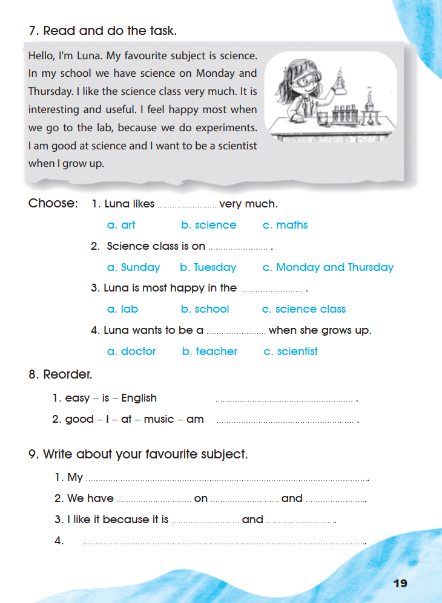
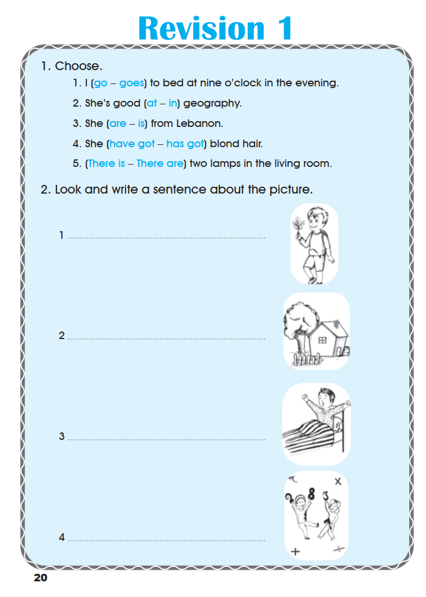
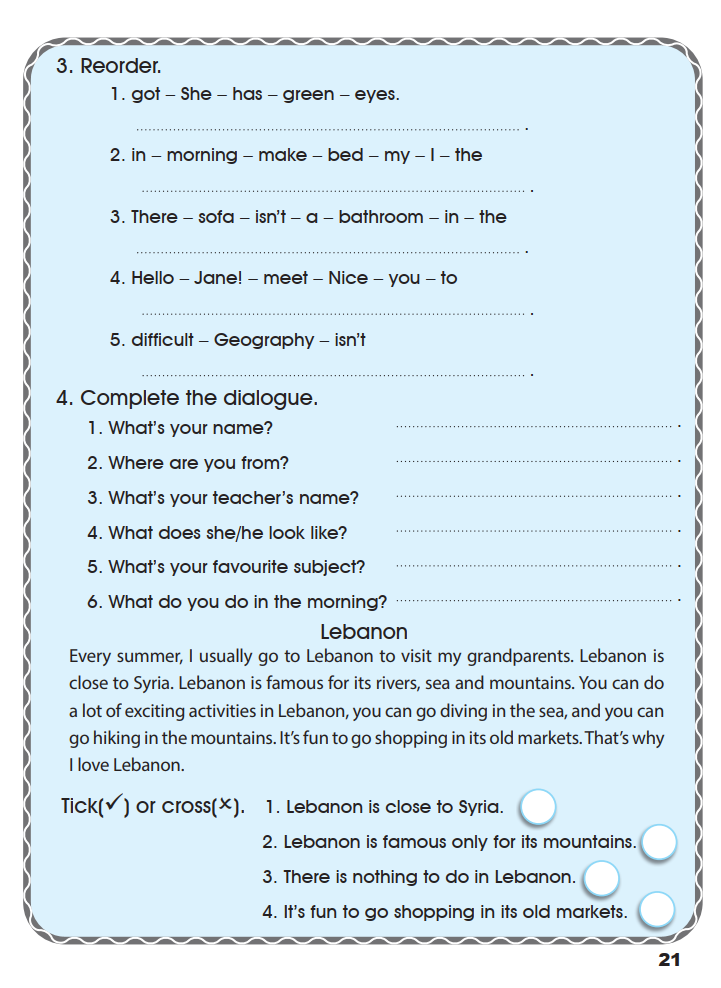

Workbook
School Subjects · pages 17–21. The complete original source scans below preserve printed content and layout.
Workbook · page 17
Original source scan 7, preserved byte-for-byte. This page includes all visible exercises, directions, examples and illustrations exactly as supplied.

Accessible text transcription · page 17
5 · School Subjects
1. Write the subjects.
1. r A b c a i (printed answered: Arabic)
2. c i s e n c e
3. o e g r h g y p a
4. t a r
5. h s t i y o r
6. u i c s m
7. n g E i h s l
8. p o s t r s
2. Look and write. (eight subject pictures with a dotted line under each)
3. Complete.
Lucy: My favourite subject is history. What’s your favourite subject, Tom?
Sarah: My ………… is ………… . What’s …………, Peter?
Peter: …………Open the source page · Pupil’s Book · p. 17
The original supplied scan, unchanged. Open it at full size to check the print, the illustrations and the answer spaces.
Exercise 1 · Write the subjects.
Item 1 is printed answered in the book as Arabic; the other seven are blank. Each answer uses every letter in its frame once.
Exercise 2 · Look and write.
Eight pictures with a dotted line under each. Every picture is described beside its field so the cue is available as text as well as in the scan.
The pictures are printed in two rows of four; the fields follow that reading order.
Exercise 3 · Complete.
Lucy: My favourite subject is history. What’s your favourite subject, Tom?
Lucy’s turn is printed in full in the book and is the model for the rest of the exchange.
Workbook · page 18
Original source scan 8, preserved byte-for-byte. This page includes all visible exercises, directions, examples and illustrations exactly as supplied.

Accessible text transcription · page 18
4. Listen and tick (✓).
1. I like geography. / History is great.
2. Art is fun. / I am good at Arabic.
3. Maths isn’t difficult. / Arabic is easy.
4. My favourite subject is sports. / Science is interesting.
5. Complete.
I like ………… · Geography is ………… · Art is ………… · I am ………… at maths · ………… is interesting · Science ………… useful.
6. Talk about your favourite subjects. (four subject pictures, oral pair work)Open the source page · Pupil’s Book · p. 18
The original supplied scan, unchanged. Open it at full size to check the print, the illustrations and the answer spaces.
Exercise 5 · Complete.
Six picture boards with six dotted lines. Every board is described beside its field.
Workbook · page 19
Original source scan 9, preserved byte-for-byte. This page includes all visible exercises, directions, examples and illustrations exactly as supplied.

Accessible text transcription · page 19
7. Read and do the task.
Hello, I’m Luna. My favourite subject is science. In my school we have science on Monday and Thursday. I like the science class very much. It is interesting and useful. I feel happy most when we go to the lab, because we do experiments. I am good at science and I want to be a scientist when I grow up.
Choose:
1. Luna likes ………… very much. a. art b. science c. maths
2. Science class is on ………… . a. Sunday b. Tuesday c. Monday and Thursday
3. Luna is most happy in the ………… . a. lab b. school c. science class
4. Luna wants to be a ………… when she grows up. a. doctor b. teacher c. scientist
8. Reorder.
1. easy – is – English …………
2. good – I – at – music – am …………
9. Write about your favourite subject.
1. My …………
2. We have ………… on ………… and ………… .
3. I like it because it is ………… and ………… .
4. …………Open the source page · Pupil’s Book · p. 19
The original supplied scan, unchanged. Open it at full size to check the print, the illustrations and the answer spaces.
Exercise 7 gives four printed options per item, so pupils choose rather than write; it is excluded from Writing and no answer is published here.
Exercise 8 · Reorder.
Use each printed word once and add the capital letter and full stop.
Exercise 9 · Write about your favourite subject.
Workbook · page 20
Original source scan 10, preserved byte-for-byte. This page includes all visible exercises, directions, examples and illustrations exactly as supplied.

Accessible text transcription · page 20
Revision 1
1. Choose.
1. I (go – goes) to bed at nine o’clock in the evening.
2. She’s good (at – in) geography.
3. She (are – is) from Lebanon.
4. She (have got – has got) blond hair.
5. (There is – There are) two lamps in the living room.
2. Look and write a sentence about the picture.
Four numbered dotted lines beside four pictures: a boy holding up a paintbrush; a house beside a large tree; a boy waking up in bed; two children with maths symbols.Open the source page · Pupil’s Book · p. 20
The original supplied scan, unchanged. Open it at full size to check the print, the illustrations and the answer spaces.
Exercise 1 prints its alternatives in brackets, so pupils choose rather than write; it is excluded from Writing and no answer is published here.
Exercise 2 · Look and write a sentence about the picture.
Four numbered dotted lines and four printed pictures. Every picture is described beside its field.
Workbook · page 21
Original source scan 11, preserved byte-for-byte. This page includes all visible exercises, directions, examples and illustrations exactly as supplied.

Accessible text transcription · page 21
3. Reorder.
1. got – She – has – green – eyes.
2. in – morning – make – bed – my – I – the
3. There – sofa – isn’t – a – bathroom – in – the
4. Hello – Jane! – meet – Nice – you – to
5. difficult – Geography – isn’t
4. Complete the dialogue.
1. What’s your name?
2. Where are you from?
3. What’s your teacher’s name?
4. What does she/he look like?
5. What’s your favourite subject?
6. What do you do in the morning?
Lebanon
Every summer, I usually go to Lebanon to visit my grandparents. Lebanon is close to Syria. Lebanon is famous for its rivers, sea and mountains. You can do a lot of exciting activities in Lebanon, you can go diving in the sea, and you can go hiking in the mountains. It’s fun to go shopping in its old markets. That’s why I love Lebanon.
Tick(✓) or cross(✗).
1. Lebanon is close to Syria.
2. Lebanon is famous only for its mountains.
3. There is nothing to do in Lebanon.
4. It’s fun to go shopping in its old markets.Open the source page · Pupil’s Book · p. 21
The original supplied scan, unchanged. Open it at full size to check the print, the illustrations and the answer spaces.
The Lebanon task prints four circles to tick or cross, so it is excluded from Writing; the passage is transcribed above.
Exercise 3 · Reorder.
Use each printed word once and add the capital letter and end punctuation.
Exercise 4 · Complete the dialogue.
Six printed questions with six dotted answer lines.
Personal practice drafts are saved in this browser; source scans remain unchanged.